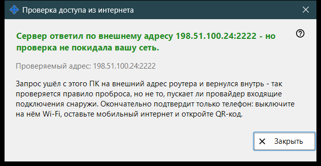
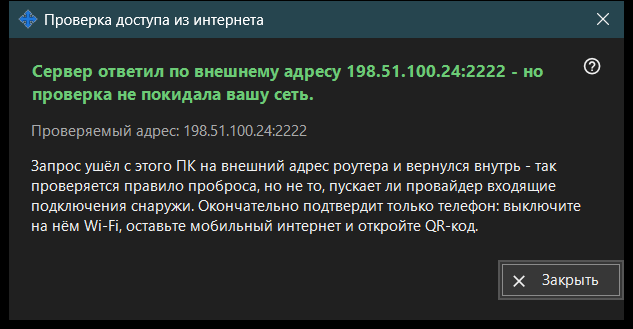

Проверка доступа из интернета
Назначение
Проверяет с этого ПК, отвечает ли общий адрес как SFTP-сервер. Окно открывается кнопкой «Проверить доступ из интернета» главного окна и показывает проверяемый адрес, вывод и пояснение.


Порядок действий
- Откройте окно: оно показывает адрес и сразу начинает проверку.
- Дождитесь заголовка с результатом.
- Прочитайте пояснение под ним.
- Если результат не окончателен, повторите проверку с телефона при выключенном Wi-Fi и включённых мобильных данных.
- Нажмите «Закрыть».
Элементы окна
Проверяемый адрес
«Проверяемый адрес: ..» показывает хост и порт. Пока идёт проверка, окно пишет «Проверка ..». Если адрес неизвестен или некорректен, окно сообщает об этом вместо проверки.
Результаты
«SFTP-сервер доступен: ..» - порт ответил приветствием SFTP. «Порт открыт, но SFTP не ответил: ..» - на порту что-то слушает, но это не наша программа; проверьте, что правило на роутере ведёт на этот ПК и на порт раздачи. Соединение, закрытое до ответа, может означать предел подключений: повторите чуть позже. Отсутствие ответа с этого ПК значит, что роутер, возможно, не пускает запрос на собственный адрес изнутри.
Почему результат может быть неокончательным
Запрос уходит с этого ПК на внешний адрес роутера и сразу возвращается внутрь, поэтому он проверяет правило проброса, а не то, пускает ли провайдер входящие подключения. Решить вопрос может только телефон: выключите на нём Wi-Fi, оставьте мобильные данные и откройте QR-код. Если подключиться по-прежнему не удаётся, настройте проброс порта кнопкой «Как настроить доступ через интернет».
Настройки менеджера · Настройки общего доступа SFTP · Настройки сервера обмена